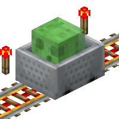
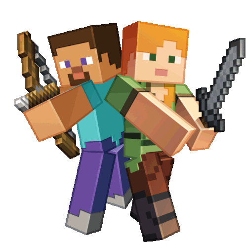
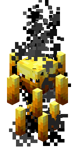

Explorando os Modos de Jogo
Existem vários modos de jogo disponíveis no Minecraft, cada um oferecendo uma experiência única. Aqui estão alguns dos principais modos de jogo do Minecraft:
Sobrevivencia
No modo Sobrevivência do Minecraft, você precisa coletar recursos, construir abrigos, lutar contra criaturas hostis e sobreviver. Explore o mundo, enfrente desafios, encontre tesouros e melhore suas habilidades para prosperar nesse ambiente implacável. Gerencie suas necessidades básicas, como alimentação e saúde, e estabeleça objetivos pessoais para criar uma experiência gratificante. Pronto para encarar a aventura e mostrar suas habilidades de sobrevivência? Descubra o mundo do Minecraft no modo Sobrevivência!

Criativo
O modo criativo no Minecraft é um modo de jogo onde os jogadores têm acesso ilimitado a todos os blocos e itens do jogo, sem a necessidade de coletá-los manualmente. Nesse modo, os jogadores podem construir livremente qualquer coisa que desejem, desde grandes estruturas até paisagens detalhadas. Eles também podem voar pelo mundo, alterar o tempo e experimentar diferentes ideias arquitetônicas. O modo criativo é uma forma popular de expressar a criatividade dos jogadores e compartilhar suas criações com outros jogadores.
Aventura
O modo Adventure no Minecraft é uma opção de jogo onde os jogadores enfrentam desafios, exploram ambientes e seguem uma narrativa definida. Eles precisam interagir com personagens não jogáveis, resolver quebra-cabeças, encontrar tesouros e completar missões para progredir. Diferentemente do modo Criativo, os jogadores não têm acesso imediato a todos os blocos e itens, e não podem destruir ou colocar blocos livremente, a menos que tenham as ferramentas certas. O modo Adventure proporciona uma experiência mais estruturada e imersiva, com ênfase na estratégia e no cumprimento de objetivos.
Espectador
O modo Espectador no Minecraft é uma opção de jogo onde os jogadores podem observar o mundo e os eventos do jogo sem interferir. Eles podem voar livremente, atravessar objetos e paredes, e têm uma visão de raio-X para ver através de obstáculos. O modo Espectador é ideal para assistir a eventos multiplayer, competições, capturar imagens e vídeos, ou explorar o mundo sem restrições. É uma opção de jogo que permite aos jogadores apreciarem o jogo de uma perspectiva de observador. 